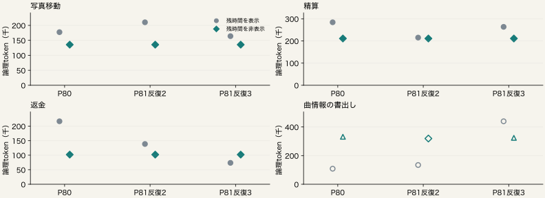

10月24日 残時間表示の反復 / 01
同じseedと初期状態で、全８条件を３回ずつ調べる
既知４課題×残時間表示M／非表示H。P80の８行と、新しいP81の16行をすべて保持。
| 条件 | 成功／評価 | 既知全token | 不明生成 | 実行済み／予定 |
|---|
| 残時間を表示 | 9/12 | 2,426,782 | 0 | 12/12 |
| 残時間を非表示 | 9/12 | 2,321,406＋不明2 | 2 | 12/12 |
独立した課題は４つ。24行や24対を独立標本として扱わない。
seed57＋呼出し番号、世界seed42。全推論保持・持続Python・実期限・計数を共通化。全体費用には失敗と不明試行も含める。P80欠測は反復で置き換えない。
10月24日 残時間表示の反復 / 02
反復1の全８条件：P80の元記録
| 課題 | 条件 | 成否 | 全仕事token | 生成 | API | 作業秒 |
|---|
| 写真移動 | M 表示 | 成功 | 177,373 | 17 | 100 | 583.8 |
| 写真移動 | H 非表示 | 成功 | 135,628 | 16 | 99 | 496.7 |
| 精算 | M 表示 | 成功 | 284,294 | 20 | 26 | 447.3 |
| 精算 | H 非表示 | 成功 | 211,110 | 24 | 25 | 353.4 |
| 返金 | M 表示 | 成功 | 216,854 | 21 | 25 | 510.7 |
| 返金 | H 非表示 | 成功 | 102,087 | 13 | 13 | 325.6 |
| 曲情報の書出し | M 表示 | 未達 | 108,571 | 12 | 80 | 355.9 |
| 曲情報の書出し | H 非表示 | 未達 | 331,569＋不明1 | 20 | 69 | 1799.5 |
成功・未達・未評価・使用量不明を、同じ行に残す。
各反復を別々に表示する。知られた費用だけの差を、完全な総費用差へ読み替えない。全入力はcache分を含み、金額ではない。
10月24日 残時間表示の反復 / 03
反復2の全８条件：P81の追加実行
| 課題 | 条件 | 成否 | 全仕事token | 生成 | API | 作業秒 |
|---|
| 写真移動 | M 表示 | 成功 | 210,357 | 19 | 101 | 865.0 |
| 写真移動 | H 非表示 | 成功 | 135,628 | 16 | 99 | 499.0 |
| 精算 | M 表示 | 成功 | 215,182 | 17 | 22 | 382.5 |
| 精算 | H 非表示 | 成功 | 211,110 | 24 | 25 | 353.5 |
| 返金 | M 表示 | 成功 | 138,701 | 17 | 17 | 361.3 |
| 返金 | H 非表示 | 成功 | 102,087 | 13 | 13 | 326.3 |
| 曲情報の書出し | M 表示 | 未達 | 134,352 | 15 | 80 | 382.7 |
| 曲情報の書出し | H 非表示 | 未達 | 319,348 | 19 | 80 | 1512.6 |
成功・未達・未評価・使用量不明を、同じ行に残す。
各反復を別々に表示する。知られた費用だけの差を、完全な総費用差へ読み替えない。全入力はcache分を含み、金額ではない。
10月24日 残時間表示の反復 / 04
反復3の全８条件：P81の追加実行
| 課題 | 条件 | 成否 | 全仕事token | 生成 | API | 作業秒 |
|---|
| 写真移動 | M 表示 | 成功 | 164,024 | 17 | 100 | 614.5 |
| 写真移動 | H 非表示 | 成功 | 135,628 | 16 | 99 | 495.5 |
| 精算 | M 表示 | 成功 | 263,695 | 19 | 26 | 440.3 |
| 精算 | H 非表示 | 成功 | 211,110 | 24 | 25 | 353.9 |
| 返金 | M 表示 | 成功 | 73,670 | 12 | 12 | 191.0 |
| 返金 | H 非表示 | 成功 | 102,087 | 13 | 13 | 326.4 |
| 曲情報の書出し | M 表示 | 未達 | 439,709 | 25 | 71 | 1399.5 |
| 曲情報の書出し | H 非表示 | 未達 | 324,014＋不明1 | 20 | 48 | 1799.8 |
成功・未達・未評価・使用量不明を、同じ行に残す。
各反復を別々に表示する。知られた費用だけの差を、完全な総費用差へ読み替えない。全入力はcache分を含み、金額ではない。
10月24日 残時間表示の反復 / 05
同じ条件の３回で、成否と費用はどの程度そろうか

塗りは成功、白抜きは未達・未評価。上向き三角は既知費用＋不明使用量。
全３回が評価済みで使用量既知の場合だけ範囲を計算。欠測を０にした平均や、成功例だけの平均は作らない。縦軸の尺度は課題ごとに異なる。
10月24日 残時間表示の反復 / 06
要求と公開出力の一致を全24対で照合する
| 課題 | 条件 | 全使用量既知 | 全要求一致 | 全公開出力一致 | 最初の差が現在時計のみ |
|---|
| 写真移動 | M | 3/3 | 0/3 | 0/3 | 3対 |
| 写真移動 | H | 3/3 | 3/3 | 3/3 | 0対 |
| 精算 | M | 3/3 | 0/3 | 0/3 | 3対 |
| 精算 | H | 3/3 | 3/3 | 3/3 | 0対 |
| 返金 | M | 3/3 | 0/3 | 0/3 | 3対 |
| 返金 | H | 3/3 | 3/3 | 3/3 | 0対 |
| 曲情報の書出し | M | 3/3 | 0/3 | 0/3 | 3対 |
| 曲情報の書出し | H | 0/3 | 未確定 | 未確定 | 0対 |
各条件３対は同じ３実行を共有する。入出力hashの照合は意味的な同値証明ではない。
一致の比は一致対数／両方の使用量が既知の判定対数であり、生成数が異なる場合は不一致。使用量欠測は未確定。時計差は該当が観測された対数。現在通知だけをそろえた事後照合は、実際の入力を変更した実験ではない。推論文字列はhashだけ照合。
10月24日 残時間表示の反復 / 07
全体の採否とレターで主張できる範囲
| 反復 | 採用基準 | 成功喪失 | 全費用差 H−M |
|---|
| 1 | 未達 | 0 | 未確定 |
| 2 | 未達 | 0 | +69,581 |
| 3 | 未達 | 0 | 未確定 |
追加P81の推論器滞在 10,405.1秒、独立評価 26.82秒。
元のP80の費用・失敗・欠測は保持する。
新手法・一般的品質維持・母集団の平均削減を、この反復だけで確立したとはしない。
P80の不明生成があるため全３反復の採用基準達成は元から不成立。反復の目的は安定性の確認。P80補助下限は別の事後解析で、終端使用量やこの表を書き換えない。各時間は重なるため足さない。同じホストで編集・読取解析・軽量検査も進めており、ホストの負荷を排他的に固定した実験ではない。